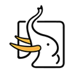
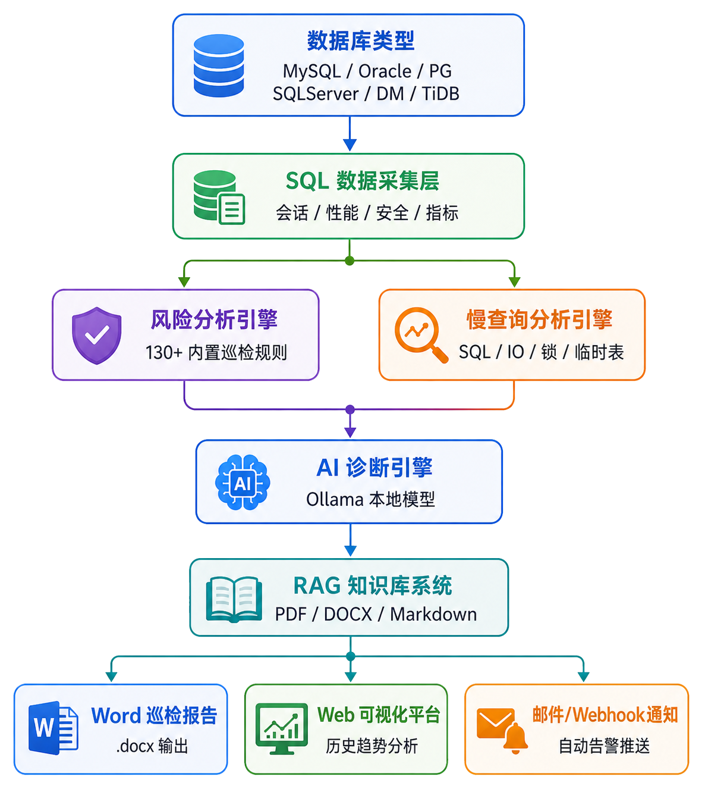

Bash / Terminal
# 克隆仓库
git clone https://github.com/fiyo/DBCheck.git
# 进入目录
cd DBCheck
# 安装依赖
pip install -r requirements.txt
# 启动 Web UI
python web_ui.py
# 访问浏览器
http://localhost:5003
开源跨平台数据库自动化健康巡检工具，专为 DBA 和运维团队打造
DBCheck 是一款开源跨平台数据库自动化健康巡检工具， 通过丰富的检查规则、AI 智能诊断和插件扩展系统，让数据库巡检从重复手工劳动转变为全自动化流程。
AI 诊断仅支持本地 Ollama，数据绝不外传。 报告导出支持数据脱敏，自动掩码敏感信息。 MIT 开源协议，代码完全透明。
专为 DBA 打造的全方位数据库健康检查解决方案
热加载插件，无需重启。GitHub 驱动插件市场，官方与社区插件清晰标识。让 DBCheck 从"工具"进化为"平台"。
仅支持本地 Ollama，数据绝不外传。代码层硬性限制，即使配置文件被篡改也会自动降级。适合金融、政务等高安全场景。
上传 AWR 报告（HTML 或 TEXT），自动解析并生成结构化 Word 分析报告，附带 AI 诊断建议。大幅降低 Oracle 性能分析门槛。
一键生成专业巡检报告，包含风险卡片、配置分析、趋势图表。支持数据脱敏，自动掩码 IP、端口、用户名等敏感信息。
自动比对数据库参数与推荐基线值，支持根据内存和负载自动计算推荐值，识别配置偏差，防止性能隐患。
检测缺失索引、冗余索引、未使用索引，给出优化建议，提升查询效率。让数据库跑得更快。
导出 Word 报告时自动掩码 IP、端口、用户名等敏感信息，防止信息泄露。适合对外交付场景。
多次巡检数据自动汇聚，生成指标趋势折线图，与上次对比一目了然，提前发现潜在风险。
支持 Cron 表达式定时任务，巡检完成后自动发送邮件/Webhook 告警。集成到现有运维体系，无人值守。
支持 Docker Hub 和 GHCR 镜像，一条命令启动，支持 amd64/arm64 双架构。适合服务器快速部署。
支持将 DOCX 巡检报告转换为 PDF，方便分享和归档。保持原有格式，适合正式汇报场景。
上传官方文档构建本地知识库，AI 诊断时自动检索相关最佳实践，让建议更精准、更有依据。
热加载、插件市场、官方与社区清晰标识，让 DBCheck 从"工具"进化为"平台"
DBCheck v2.6.0 引入完整的插件扩展架构。 巡检规则、通知渠道、报告模板均可通过插件扩展， 无需修改核心代码，热加载即时生效。
一个工具，满足几乎所有关系型数据库巡检需求



v2.6.0 带来的核心突破
热加载插件，无需重启。GitHub 驱动插件市场，官方与社区插件清晰标识。
仅支持本地 Ollama，数据绝不外传。代码层硬性限制，适合金融、政务等高安全场景。
上传 AWR 报告（HTML 或 TEXT），自动解析并生成 Word 报告，附带 AI 诊断建议。
支持 amd64 和 arm64 双架构镜像，Docker Hub 和 GHCR 双源分发，一条命令启动。
导出报告时自动掩码 IP、端口、用户名等敏感信息。适合对外交付和合规审计场景。
多次巡检数据自动汇聚，生成趋势折线图，与上次对比一目了然，提前发现潜在风险。
从连接到报告，全自动化流程

选择最适合你的使用方式
# 克隆仓库
git clone https://github.com/fiyo/DBCheck.git
# 进入目录
cd DBCheck
# 安装依赖
pip install -r requirements.txt
# 启动 Web UI
python web_ui.py
# 访问浏览器
http://localhost:5003
# 拉取镜像 (Docker Hub)
docker pull jackge12345/dbcheck:latest
# 或使用 GHCR 镜像
docker pull ghcr.io/fiyo/dbcheck:latest
# 启动容器
docker run -d --name dbcheck -p 5003:5003 \
-v $(pwd)/config:/app/config \
-v $(pwd)/data:/app/data \
jackge12345/dbcheck:latest
# 访问 Web UI
http://localhost:5003
# 安装 DBCheck Skill
clawhub install dbcheck
# 执行巡检 (自然语言)
帮我巡检一下 MySQL 数据库 192.168.1.100
# 查看历史报告
显示最近的巡检报告
# 下载打包版 (Windows)
wget https://github.com/fiyo/DBCheck/releases/latest/download/DBCheck-win64.zip
# 解压后直接运行
dbcheck.exe
# 无需安装 Python / 无需安装依赖
# 适合快速演示和内网分发
灵活选择，总有一款适合你
直接运行脚本，适合服务器自动化
可视化界面，操作更直观
集成到 AI 助手中
一键容器化部署，零依赖
关于 DBCheck 的常见疑问解答